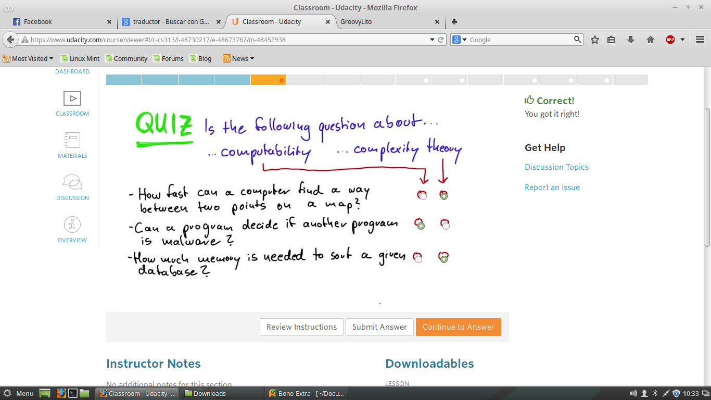
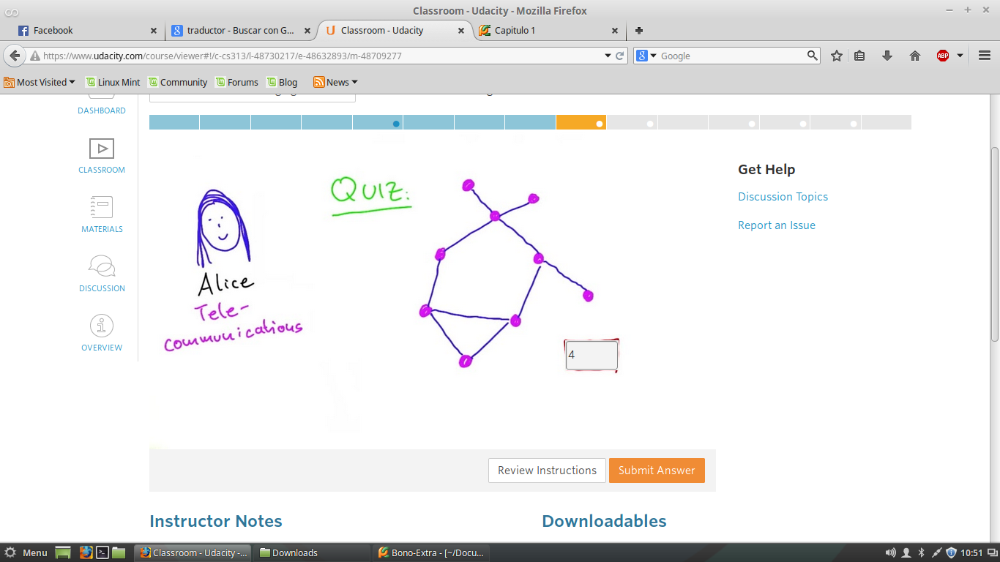

Reconocer-Comprender-Navegar
Reconocer -> Problemas Deaafiantes
Comprender->
Navegar ->
Quiz 1 - Conceptos Claves
Computabilidad y Teaoria de Complejidad

Computabilidad -> Puede un programa decidir si otro programa es malware
Teaoria de Complejidad->Como de rapido un computador puede encontrar un camino entre dos puntos en un mapa.
Quiz 2 - Numero de Monitores Necesarios
Encontrar el numero de monitores necesarios para monitorar todos los puntos de red de comunicaciones.

Rta: 4
Quiz 3 - MINIMO numero de Monitores
Son necesarios instalar dos monitores
Rta: 2
Quiz 4 -Numero de comunicaciones
Para una red con 5 centro de comunicaiones
2*2*2*2*2
Rta: 32
Quiz 5 - MINIMO numero de Monitores
Son necesarios instalar dos monitores
Rta: 2